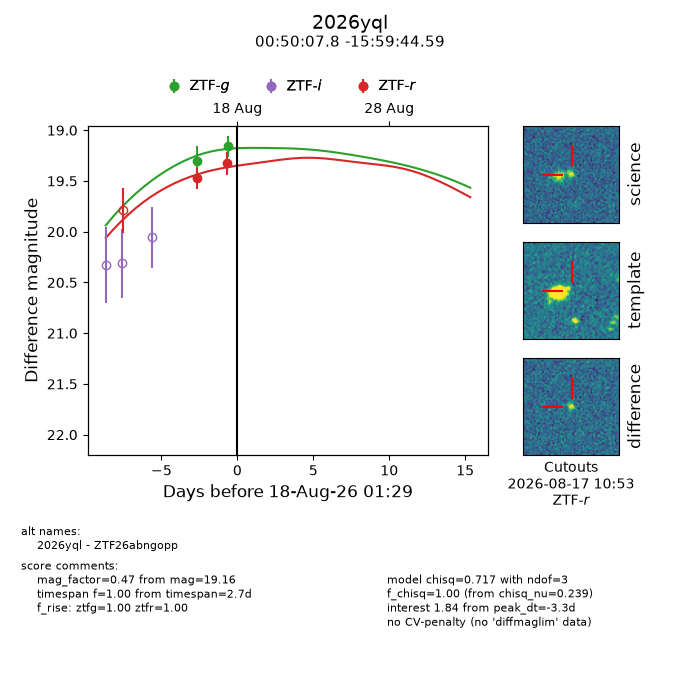
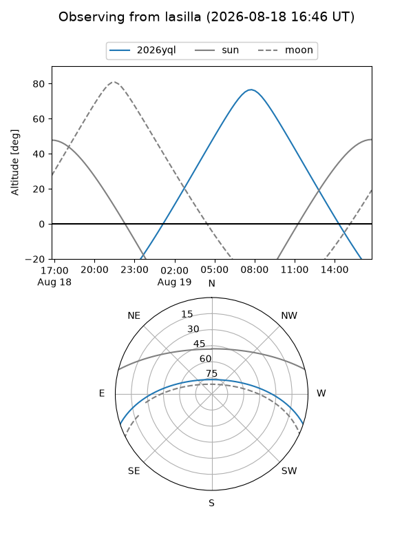
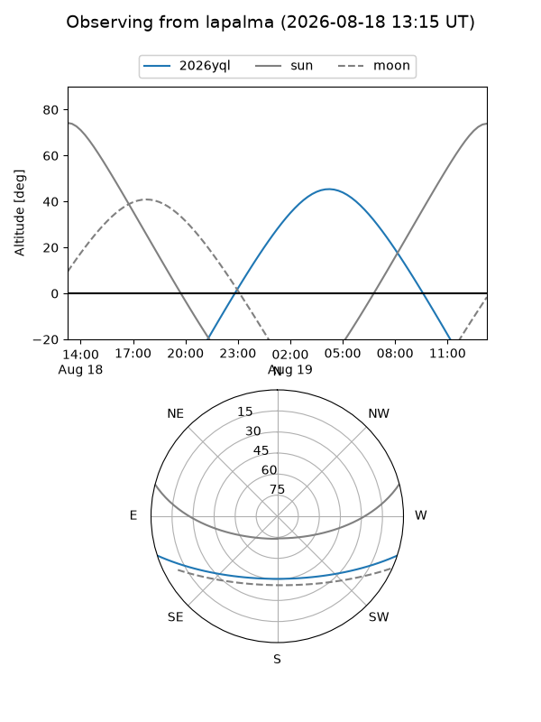
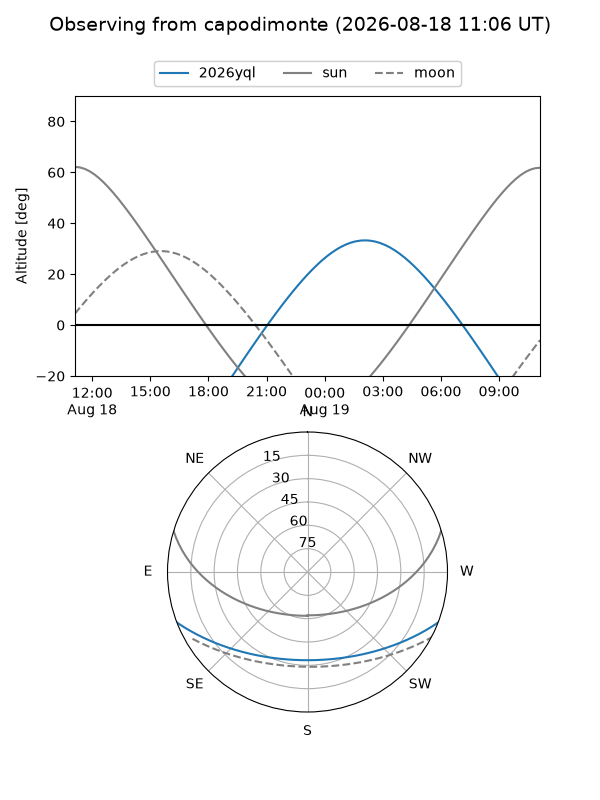
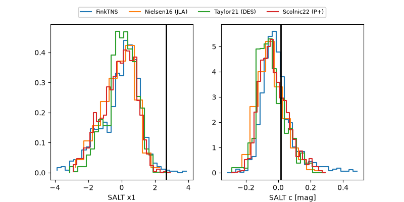

2026yql
Target 2026yql at 2026-08-18 13:30
Aliases and brokers:
FINK-ZTF: ztf.fink-portal.org/ZTF26abngopp
Lasair-ZTF: lasair-ztf.lsst.ac.uk/objects/ZTF26abngopp
ALeRCE-ZTF: alerce.online/object/ZTF26abngopp
YSE-PZ: ziggy.ucolick.org/yse/transient_detail/2026yql
TNS name: wis-tns.org/object/2026yql
Direct TNS query: direct search
alt names
ZTF26abngopp (ztf,fink_ztf)
2026yql (tns,yse)
Coordinates:
equatorial (ra, dec) = 12.5324,-15.99572
equatorial (HMS+DMS) = 00:50:07.77,-15:59:44.59
galactic (l, b) = (121.3038,-78.86333)
Flags:
TNS type: nan
peak dt: -2.8
Photometry:
last ztfg=19.16, ztfr=19.33
2 ztfg, 2 ztfr detections
Lightcurve

Visibility



Additional plots
